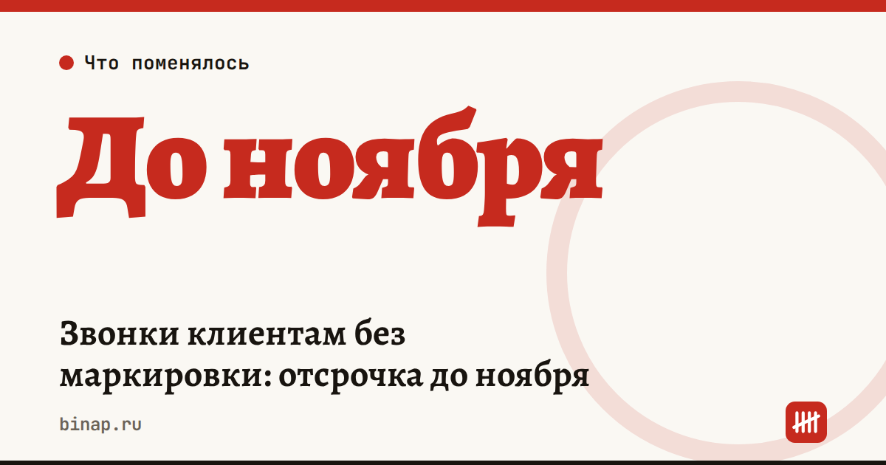

Маркировка звонков: отсрочка до ноября и сколько стоит обзвон

Блокировку звонков банков без маркировки отложили до начала ноября: об этом 14 октября попросило Минцифры, и МТС, Т2 и «Билайн» согласились. Но маркировка звонков от компаний действует с 1 сентября 2025 года и стоит денег звонящему — по данным «Коммерсанта», около 30 копеек за каждую попытку вызова.
Коротко
- Операторы планировали с 15 октября не пропускать немаркированные звонки крупных банков. Теперь — не раньше начала ноября (по «Коммерсанту» — до 1 ноября).
- Маркировка платная для того, кто звонит, и считается за попытку — даже если до клиента не дозвонились.
- Тариф у крупнейших операторов — около 30 копеек за попытку (данные «Коммерсанта», у вашего оператора может отличаться).
- Банки оценивают свои расходы на маркировку в 11 млрд ₽ в год (по данным РБК).
- Правило касается не только банков: «МегаФон» просил клиентов-компаний заранее наладить договор и техническую часть.
Сколько стоит обзвон
Расчёт редакции: 1 000 попыток вызова в день × 30 коп. × 22 рабочих дня ≈ 6 600 ₽ в месяц. Отдел из 5 менеджеров по 200 попыток в день выходит на ту же сумму.
Главный вывод: платить придётся за каждую попытку, а не за разговор. Чем больше в базе неактуальных номеров, тем больше вы платите впустую.
О чём спорят
- Банки считают, что закон обязывает операторов показывать абоненту, кто звонит, а не продавать эту услугу звонящему.
- 12 октября Национальный совет финансового рынка просил ФАС вмешаться: по его мнению, согласованная блокировка звонков крупнейших банков может быть злоупотреблением доминированием. Позиции ФАС на 15 октября не было.
- По позиции Минцифры, массовые звонки без договора на маркировку незаконны, а спам-звонков с начала маркировки стало на 25–30% меньше.
- Закон позволяет оператору приостановить услуги до устранения нарушения. Штрафы в источниках не названы.
Что сделать сейчас
- Узнайте у оператора, заключён ли у вас договор на маркировку, по какому тарифу и считаются ли ваши обзвоны массовыми.
- Посчитайте попытки вызова за месяц и умножьте на тариф — это новая строка в бюджете продаж.
- Почистите базу: уберите неактуальные и повторяющиеся номера, чтобы не платить за пустые попытки.
- Проверьте, под каким номером и именем звонят менеджеры: клиент должен узнавать вас с первого звонка.
- Если звонков стало дороже, вкладывайтесь в качество каждого: как не терять клиентов на первом контакте — в колонке клиентов теряют на первом ответе, как выстроить работу отдела — в пяти уроках отдела продаж.
Частые вопросы
Когда начнут блокировать звонки банков? Не раньше начала ноября: Минцифры попросило операторов подождать, и крупнейшие операторы согласились.
Платит ли тот, кому звонят? Нет, маркировка платная для того, кто звонит.
Касается ли это ИП? Обязанность показывать абоненту, кто звонит, касается вызовов от компаний и ИП. Нужен ли договор именно вам и по какому тарифу — уточните у оператора.
- Ведомости: Минцифры попросило операторов отложить ограничения звонков банков
- Ведомости: операторы дали отсрочку по звонкам
- РБК: банки и операторы спорят о маркировке звонков
- Коммерсантъ: сколько стоит маркировка звонка
- Коммерсантъ: Минцифры просит отложить блокировку звонков
- КонсультантПлюс: маркировка массовых звонков